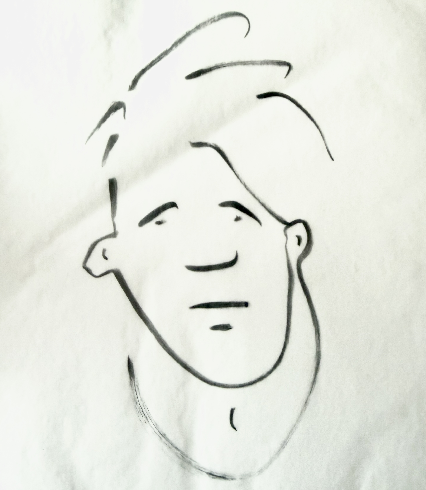

Where do you personally stand in relation to creativity?

I find that I’m most creative when I’m steeping myself in the art of others.
What pulls you toward it, keeps you in it, or keeps you at a distance?
I'm much more driven to write if I've been reading voraciously, and much more likely to draw or paint if I've been spending time in museums and galleries. If I'm not connected in those ways, I can go for a long time without writing or making anything.
Anything else about it that's led to its place in your life?
Another quirk of my own approach is a concentration on materials, feeling the immediacy of writing with a good pen on a blank sheet of paper, or putting down a pristine coat of gesso on a board. The rituals of preparation can be inspiring in and of themselves.